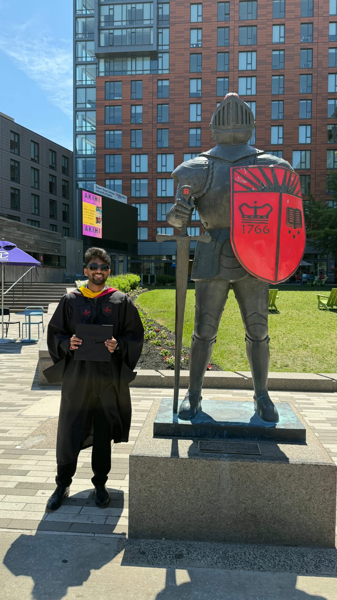

Maharshi Rohith Donthi · MS Data Science · Rutgers University
Data Scientist specializing in credit risk modeling and energy market analytics. I build production-grade pipelines that drive measurable business outcomes, from better underwriting decisions to sharper generation forecasts, benchmarked honestly against the simplest possible alternative.

01 / Research finding
My MS capstone at Rutgers built a compositional forecasting pipeline for U.S. state-level electricity generation mix across 50 states (EIA data, 1990-2023). I applied CLR transformation to handle the compositional constraint, then fit per-state VAR models with AIC-based lag selection and rolling-window validation.
Then I ran the simplest possible baseline: next year's mix equals this year's mix. The baseline won across every fuel category.
| Category | VAR Model | Baseline | Delta |
|---|---|---|---|
| Natural Gas | 19.3 pp | 3.2 pp | 83% lower |
| Other Fossil | 21.9 pp | 4.9 pp | 78% lower |
| Nuclear & Renewable | 42.0 pp | 9.8 pp | 77% lower |
02 / Case studies
Calibrated PD model mapped to a PDO/ODDS scorecard, producing APPROVE / REVIEW / DECLINE decisions with reason codes, plus PSI drift monitoring with automated retraining. Built on 1,200 synthetic Metro 2 bureau records with real bureau features.
Compositional time-series forecasting of U.S. electricity generation mix across all 50 states (EIA 1990-2023). CLR transformation, per-state VAR with AIC/BIC/HQIC lag selection, rolling-window validation, and honest benchmark against persistence baseline. See Research section above for full findings.
03 / About
I'm an MS Data Science graduate from Rutgers (Statistics Track, December 2025) based in Jersey City, NJ. My work sits at the intersection of quantitative modeling and domain expertise, specifically energy markets and credit risk, two fields where model evaluation matters as much as model building.
The thesis result I'm most proud of isn't the CLR methodology or the per-state VAR. It's the table that shows a persistence baseline beating the model in every category, with a clear explanation of why that's the correct finding, not a failure. Knowing when and why your model is wrong is the job.
Energy analytics sits at the intersection of physical systems, policy, and data, which is why it's harder and more interesting than most DS problems. Getting generation forecasts right requires both statistical rigor and genuine domain context.
04 / Background
05 / Skills
# Calibrated P(good) to interpretable scorecard score # PDO=20 pts to double odds | SCORE0=600 at ODDS0=50 import numpy as np def prob_to_score(p_good, score0=600, odds0=50, pdo=20): odds = np.array(p_good) / (1 - np.array(p_good) + 1e-9) factor = pdo / np.log(2) offset = score0 - factor * np.log(odds0) return np.round(offset + factor * np.log(np.maximum(odds, 0.001))).astype(int) # P(good)=0.09 score 421 DECLINE # P(good)=0.86 score 650 APPROVE
06 / Interactive demo
The same PDO/ODDS logic from the Synergy pipeline, running directly in the browser. Adjust inputs and watch the score and decision update in real time.
07 / Contact
Particularly interested in energy analytics and credit risk, anywhere that honest model evaluation is valued as much as the model itself.